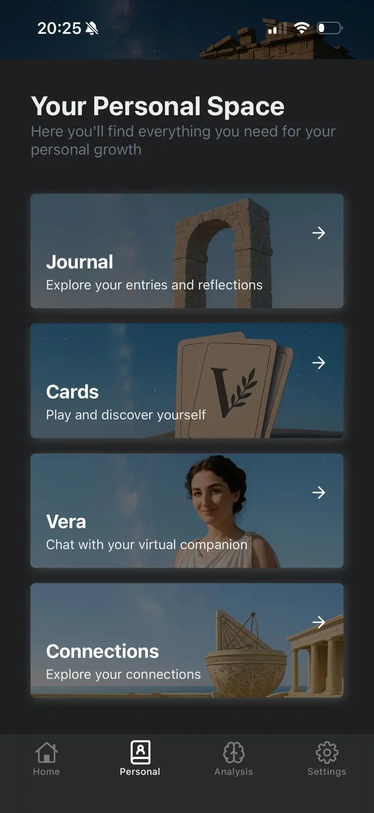
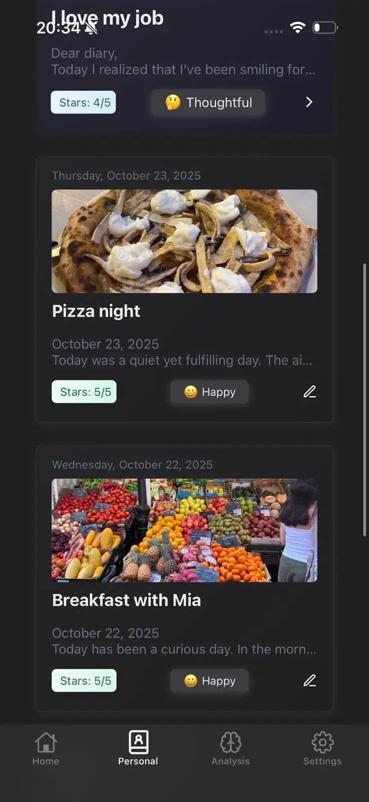
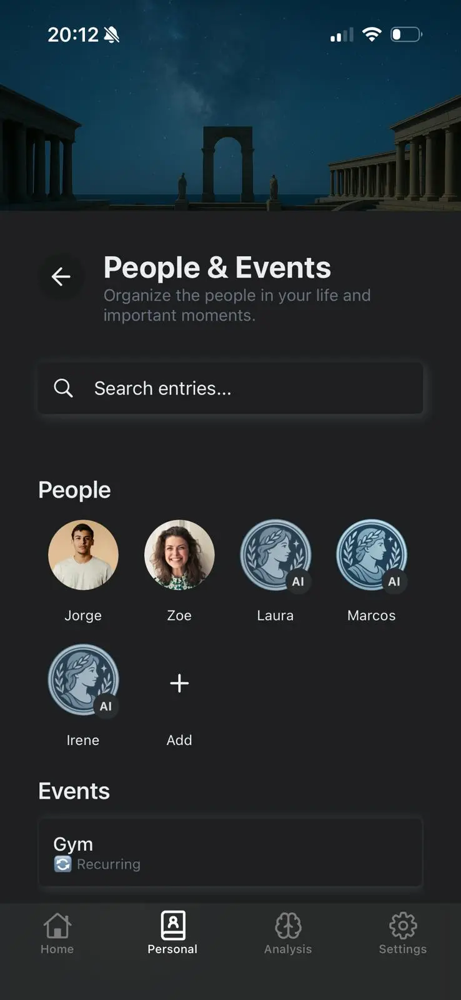
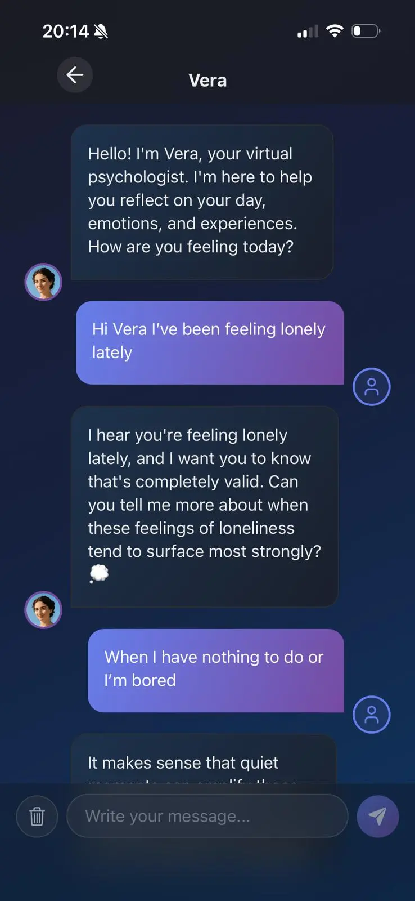
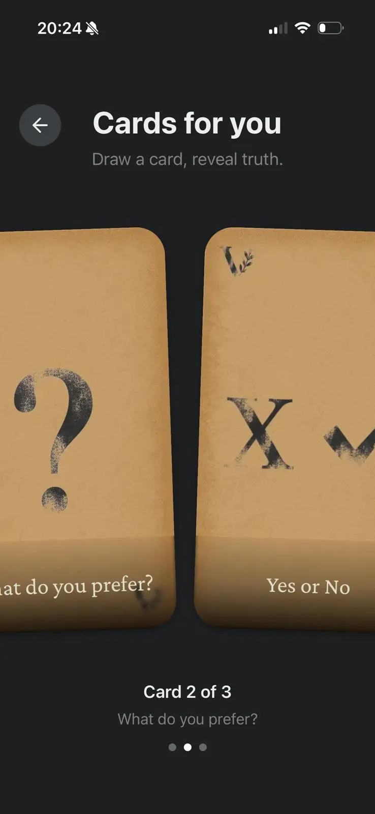

Veritas
Sí, es otro intento de hacer una app con IA. Este va con cariño.
Con Rubén Romera nos propusimos algo simple: un diario para ponerle palabras a lo que sientes, con IA útil y sin postureo terapéutico.
iOS
React Native
IA

Lo que construimos
Un producto pequeño, con decisiones muy concretas: utilidad real, tono humano y cero drama técnico innecesario.




Qué intenta hacer Veritas (y qué no)
Intenta ayudarte a ordenar emociones y pensamientos. No intenta diagnosticarte ni sustituir ayuda profesional.
Powered by AI
Cómo lo estamos construyendo
Primero escuchar
Partimos de casos reales: días buenos, días raros y días reguleros.
Luego iterar
Ajustamos prompts y UX hasta que la app acompañe sin estorbar.
Privacidad por defecto
Sin guardar datos personales en nuestra base de datos, todo queda en el teléfono.
Honestidad de producto
No terapia, no milagros: solo escritura guiada para autoayuda.
Preguntas que nos hacemos nosotros
¿De verdad es "otro intento" de app con IA?
Sí, totalmente. Pero este intento está hecho con cariño, con límites claros y con foco en utilidad de verdad.
¿Qué pinta DeepSeek aquí?
Usamos un wrapper propio para controlar mejor contexto, estilo y seguridad de las respuestas.
¿Guardáis algo en vuestra BBDD?
No. El diario y el contexto del usuario se quedan en el móvil. Punto.
¿Esto es una herramienta terapéutica?
No. Es una herramienta de autoayuda en formato diario para poner palabras a los sentimientos.
Veritas, con los pies en la tierra
Si te apetece probarlo, aquí tienes la versión publicada en iOS